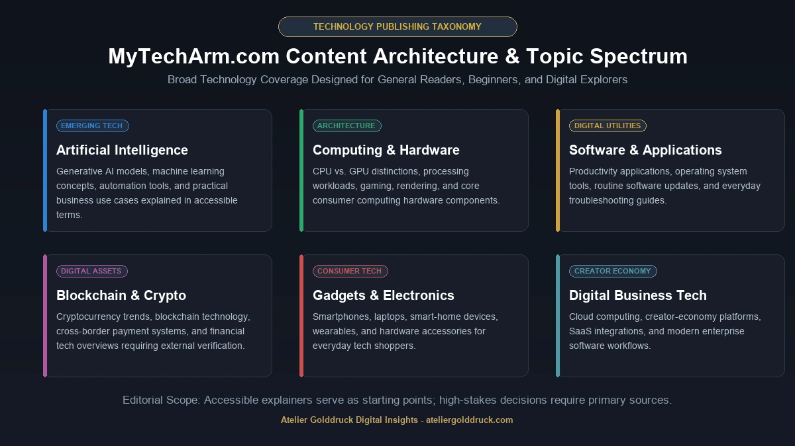
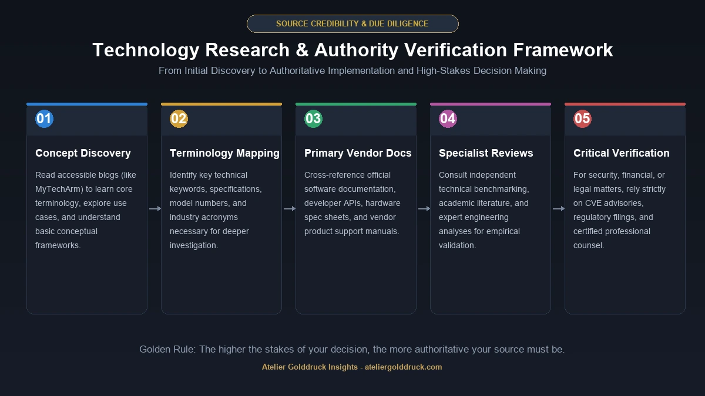

If you have searched for mytecharm com, you are probably trying to understand what MyTechArm.com is, what kind of information it publishes, whether it is useful for everyday technology questions, and whether you can rely on it for more serious research.
MyTechArm is associated with a broad technology-content model rather than a narrowly focused publication. Current indexed pages connected with the MyTechArm name cover subjects such as artificial intelligence, software, gadgets, blockchain, computing, digital services, cloud technology, and practical technology topics.
That broad coverage is both its appeal and something readers should keep in mind.
A site that covers everything from CPU vs. GPU and creator-economy technology to blockchain and digital services can be convenient when you want a quick explanation. But when the subject involves security, medicine, finance, technical implementation, or another high-stakes area, it makes sense to verify important claims against primary or specialist sources.
So, what exactly is MyTechArm.com, what can you find there, and how should you use it?
Let's take a closer look.
What Is MyTechArm.com?
MyTechArm.com is a technology-focused content website associated with articles about modern technology, software, digital products, AI, computing, and related subjects.
The current indexed MyTechArm-branded website presents a mix of technology and general-interest material. Recent posts include topics such as blockchain innovation, crypto investors, cross-border payments, creator-economy technology, CPU and GPU differences, home technology, and other digital subjects.
Independent reviews generally describe MyTechArm as a broad technology information resource aimed more at everyday and beginner readers than highly specialized technical professionals.
That distinction is useful.
You don't necessarily visit a general technology blog expecting the same depth as an engineering journal, official software documentation, or an established technology newsroom.
Instead, its potential value is in making technology topics easier to approach.
Why Are People Searching for “MyTechArm Com”?
The keyword mytecharm com is a navigational-style search.
Someone typing the domain name into Google may already know about the website and simply want to find it. Others may have seen a MyTechArm article in search results and want to know whether the site is worth using.
That creates several possible search intents:
- What is MyTechArm.com?
- Is MyTechArm a technology website?
- What topics does MyTechArm cover?
- Is MyTechArm reliable?
- Is MyTechArm safe?
- Who is behind MyTechArm?
- Does MyTechArm publish technology news?
- Can beginners use MyTechArm?
- Is MyTechArm useful for troubleshooting?
- What type of articles does MyTechArm publish?
A good guide therefore shouldn't stop at a one-paragraph description.
It should answer the questions a reader is likely to ask after discovering the site.
What Topics Does MyTechArm Cover?
The MyTechArm content footprint is relatively broad.

Current indexed material includes several technology-related areas.
Artificial Intelligence
AI has become one of the largest areas of technology publishing, and MyTechArm-related content includes artificial intelligence and emerging technology subjects.
Typical topics in this area can include:
- AI tools
- Generative AI
- Machine learning
- AI applications
- Business uses of AI
- Automation
- Emerging AI trends
For beginners, explanatory articles can be useful because AI terminology can become confusing very quickly.
However, readers should verify important claims about AI capabilities, privacy, security, and performance against the relevant company's documentation or other authoritative sources.
Software and Applications
Software is another natural part of a technology publication.
Content in this category can help readers understand:
- Apps
- Software features
- Digital tools
- Updates
- Productivity applications
- Software troubleshooting
- Online services
The value of a software article often depends on how specific and current it is.
A basic explanation can remain useful for months, while an article about a particular software version can become outdated after a single major update.
Gadgets and Consumer Technology
Technology readers also frequently search for information about consumer devices.
That can include:
- Smartphones
- Laptops
- Computers
- Accessories
- Smart-home products
- Wearables
- Consumer electronics
For a beginner, an overview can be a useful starting point.
For a purchase involving significant money, however, it is better to compare specifications, independent testing, warranty information, current pricing, and user experience before making a decision.
Computing: CPUs, GPUs and More
Computing terminology can be confusing when you encounter it for the first time.
For example, a CPU and GPU both process information, but they are designed for different workloads.
A CPU is generally built around a smaller number of powerful, flexible processing cores and handles a wide range of general-purpose tasks.
A GPU contains many processing units designed to perform large numbers of similar operations efficiently.
This distinction becomes important for:
- Gaming
- Video editing
- 3D rendering
- AI workloads
- Scientific computing
- Everyday computing
MyTechArm's indexed content includes a CPU-versus-GPU explainer, showing the site's interest in making technical concepts accessible to general readers.
Blockchain and Cryptocurrency
Another part of the MyTechArm content footprint involves blockchain and cryptocurrency-related subjects.
Topics can include:
- Blockchain technology
- Crypto markets
- Digital assets
- Blockchain innovation
- Cryptocurrency investors
- Financial technology
These subjects deserve extra caution.
Cryptocurrency information can become outdated quickly, and financial decisions should never be based on a single blog post.
If an article discusses a token, investment opportunity, regulation, price, or financial product, readers should cross-check the information with current primary sources and appropriate financial resources.
Digital Business and Technology
Technology is no longer limited to devices.
Modern businesses rely on:
- Cloud computing
- Digital payments
- Automation
- SaaS
- Data systems
- Cybersecurity
- Collaboration software
- Artificial intelligence
MyTechArm's broader content mix reflects this intersection between technology and business. Current indexed material includes topics such as cross-border payments and creator-economy technology.
That makes the site potentially relevant to entrepreneurs and professionals who want a general understanding of emerging digital trends.
Is MyTechArm.com a News Website?
This depends on what you mean by “news.”
MyTechArm is better understood as a general technology-content platform than as a direct replacement for a major technology newsroom.
There is a meaningful difference.
A technology news organization may have:
- Dedicated reporters
- Editors
- Original interviews
- On-site reporting
- Press credentials
- Extensive sourcing
- Investigative coverage
A broad technology blog may instead focus on:
- Explainers
- Summaries
- Guides
- Trend articles
- Software information
- General technology topics
Independent reviews have similarly characterized MyTechArm as more of an accessible technology resource than a publication focused on original investigative reporting.
That doesn't automatically make the content useless.
It simply tells you how to use it.
Is MyTechArm.com Useful for Beginners?
This is probably one of the stronger use cases for a site like MyTechArm.
Technology websites can become intimidating when every article assumes the reader already understands technical terminology.
Beginner-friendly explanations can help someone understand concepts such as:
- What a GPU does
- How cloud computing works
- What blockchain means
- How an AI tool is used
- What a software feature does
- Why a particular technology matters
Independent coverage of MyTechArm commonly highlights its accessible, straightforward approach for readers who don't necessarily have a technical background.
For a beginner, clarity is often more useful than unnecessary technical complexity.
What Makes a Good MyTechArm Article?
A strong technology article should do more than repeat definitions.
The most useful articles usually answer five questions:
1. What is it?
Start with a plain-English explanation.
2. Why does it matter?
Give the reader a reason to care.
3. How does it work?
Explain the basic mechanism without drowning the reader in jargon.
4. Where is it used?
Real-world examples make technology easier to understand.
5. What are the limitations?
No technology is perfect. Good explanations acknowledge trade-offs.
This framework is useful whether you're reading MyTechArm or any other technology website.
MyTechArm.com Credibility: What Should Readers Look For?
This is where readers should be a little more careful.
A technology article can look professional while still being incomplete, outdated, or poorly sourced.
Before trusting an article, look at:
- Author identity
- Publication date
- Update date
- Sources
- Primary references
- Technical accuracy
- Specificity
- Whether claims can be independently verified
Independent reviews have raised questions around author transparency, sourcing, and editorial depth on MyTechArm-related content.
That doesn't mean every article is wrong.
It means readers should distinguish between a useful starting point and a definitive source.
That distinction is especially important for rapidly changing technology.
Does MyTechArm.com Have Original Reporting?
Readers should not automatically assume that every technology article represents original reporting.
A website can publish a useful summary without having conducted the underlying research itself.
For example, an article about a new smartphone might summarize information originally announced by the manufacturer.
An article about an AI model might summarize the company's announcement or information already reported elsewhere.
That can still be useful if the summary is accurate and clearly presented.
But when originality matters, look for:
- First-hand testing
- Interviews
- Original screenshots
- Direct documentation
- Research citations
- Expert commentary
- Clearly identified sources
Independent reviews of MyTechArm have specifically questioned the amount of original reporting and sourcing in its content model.
MyTechArm.com and SEO
Another reason smaller technology websites attract attention is search visibility.
Technology has an enormous number of long-tail searches.
Someone might search:
What is a GPU?
Another person might search:
CPU vs GPU for video editing
Another might search:
How does AI automation work?
These are very different queries, even though they belong to the same broad topic.
A technology website can build topical coverage by creating content around these related questions.
For readers, this means a site such as MyTechArm may appear in search results for very specific technology queries.
But appearing in Google does not automatically make an article authoritative.
Search visibility and information quality are separate things.
MyTechArm.com vs. Major Technology Publications
It helps to understand where a smaller technology site fits.
| Type of Website | Main Strength |
|---|---|
| Major tech newsroom | Original reporting and breaking news |
| Technical documentation | Precise product or software instructions |
| Academic publication | Research and technical evidence |
| Specialist technology site | Deep expertise in a particular field |
| General tech blog | Accessible explanations and broad coverage |
| MyTechArm-style platform | Broad technology information for general readers |

This isn't necessarily a competition where one type is always better.
It depends on what you're trying to accomplish.
If you want to understand a technology concept quickly, a general blog may be enough.
If you are implementing an API, use the official documentation.
If you are making a major cybersecurity decision, consult authoritative security resources.
If you are researching an investment, verify financial information independently.
The source should match the importance of the decision.
Is MyTechArm.com Safe?
“Safe” can mean several different things.
It can mean:
- Is the website technically safe to visit?
- Is the information accurate?
- Is the site trustworthy?
- Is the site appropriate for sensitive information?
- Is a product or service recommended by the site safe?
Those are different questions.
A website can be safe to browse while still containing an article that is outdated.
Likewise, a technically accurate article may not be sufficient for a high-stakes decision.
For that reason, don't treat a general technology website as an automatic authority simply because it looks professional.
For sensitive matters, verify information independently.
How to Use MyTechArm.com Responsibly
A sensible approach is simple.
Use it for discovery
Find an explanation of a topic you don't understand.
Use it for terminology
Learn the vocabulary surrounding a technology.
Use it for ideas
Discover related technologies or concepts you want to research.
Verify important claims
Check the original company, documentation, research paper, government source, or specialist publication.
Check dates
Technology changes quickly.
An article that was accurate two years ago may no longer describe the current product.
This is particularly important with AI, software, cybersecurity, cloud services, and cryptocurrency.
Who Might Find MyTechArm.com Useful?
Students
Students can use technology explainers to understand unfamiliar concepts before going deeper into academic or technical sources.
Beginners
People who are new to technology may appreciate plain-language explanations.
Casual Tech Readers
If you simply want to understand what a new technology does, a general article can be a convenient starting point.
Entrepreneurs
Business owners can use technology articles to discover tools, trends, and ideas worth researching.
Content Researchers
Writers can use broad technology coverage to identify subjects for further investigation.
Who Should Look Beyond MyTechArm.com?
There are situations where a general technology blog isn't enough.
Developers
Use official API documentation, SDK documentation, GitHub repositories, and technical specifications for implementation decisions.
Security Professionals
Use vendor advisories, CVE databases, security research, and official security documentation.
Investors
Use regulatory filings, company reports, exchange information, and reputable financial sources.
Researchers
Use peer-reviewed research and primary literature.
IT Administrators
Use official vendor documentation and current product support information.
The principle is simple:
The more important the decision, the more authoritative your source should be.
MyTechArm.com Content Strengths
There are several potential strengths to the platform's broad content approach.
Broad Technology Coverage
The site covers more than one narrow technology category.
Accessible Language
Independent reviews commonly characterize its material as relatively accessible to general readers.
Beginner-Friendly Topics
Conceptual explainers can be useful when you are encountering a technology for the first time.
Wide Range of Subjects
Current indexed content spans computing, AI, blockchain, payments, creator technology, home technology, and other areas.
MyTechArm.com Limitations
A balanced assessment also requires looking at limitations.
Broad Coverage Can Mean Less Depth
Covering many subjects makes it difficult for a single publication to maintain deep expertise in every field.
Technology Changes Quickly
A good article can become outdated when a product, operating system, AI model, or service changes.
Source Quality Matters
Readers should check whether technical claims are supported by primary sources.
General Information Is Not Professional Advice
Technology articles should not be treated as a substitute for professional guidance in areas such as cybersecurity, finance, medicine, or legal matters.
Author Transparency Matters
Independent reviews have questioned the transparency and depth of authorship on some MyTechArm content.
These aren't reasons to automatically dismiss the website.
They are reasons to use it intelligently.
How to Tell Whether a MyTechArm Article Is Worth Reading
Before spending time on an article, ask a few quick questions.
Is the article recent?
Check the publication or update date.
Does it identify the author?
A named author with relevant expertise provides useful context.
Does it cite sources?
Look for links to official announcements, documentation, research, or other primary material.
Does it provide specifics?
Generic statements are less useful than concrete examples.
Can you verify the important claims?
If the answer is yes, confidence increases.
Does it distinguish fact from opinion?
Good technology writing makes the difference clear.
MyTechArm.com for Technology Research
MyTechArm can be one step in a research process.
Imagine you're researching a new AI technology.
A sensible workflow might be:
Step 1: Read a beginner-friendly explanation.
Step 2: Identify the important terms.
Step 3: Find the company's official documentation.
Step 4: Read independent technical analysis.
Step 5: Compare multiple sources.
Step 6: Make your decision using current information.
This approach is much safer than relying on one article.
The same principle applies to gadgets, software, cybersecurity, cryptocurrency, cloud services, and other fast-changing technologies.
MyTechArm.com and AI-Generated Content
Modern technology publishing has another challenge: AI-generated content.
AI can produce an article that sounds polished while still containing:
- Incorrect facts
- Outdated information
- Missing context
- Invented details
- Repetitive explanations
- Unsupported claims
That means readers should judge technology content based on evidence rather than writing style alone.
A polished article isn't necessarily a well-researched article.
Look for:
- Sources
- Specific examples
- Technical documentation
- Named authors
- Original analysis
- Clear dates
- Transparent corrections
This is useful when evaluating MyTechArm as well as every other online technology publication.
Frequently Asked Questions About MyTechArm.com
What is MyTechArm.com?
MyTechArm.com is associated with a broad technology-content platform covering subjects such as AI, software, computing, gadgets, blockchain, digital services, and technology trends.
Is MyTechArm a technology website?
Yes. Its current indexed content is predominantly technology-oriented, although the site also contains some broader categories and topics.
What does MyTechArm cover?
Its content footprint includes AI, software, computing, gadgets, blockchain, digital payments, creator technology, home technology, and other technology-related subjects.
Is MyTechArm.com a reliable source?
It can be useful for general information and discovery, but readers should verify important technical claims against primary or authoritative sources. Independent reviews have raised questions about sourcing and editorial transparency.
Is MyTechArm good for beginners?
It may be useful for beginners because independent reviews characterize its content as relatively accessible and less technical than specialist publications.
Does MyTechArm publish technology news?
It publishes technology-related updates and explainers, but it is better viewed as a general technology-content resource than as a direct equivalent of a major technology newsroom.
Can I use MyTechArm for technical research?
You can use it as a starting point, but technical research should also involve official documentation, primary sources, specialist publications, or research papers.
Does MyTechArm cover artificial intelligence?
Yes. AI and emerging technology are among the subjects associated with its broader technology coverage.
Does MyTechArm cover cryptocurrency?
Yes. Current indexed content includes cryptocurrency and blockchain-related subjects.
Does MyTechArm cover computer hardware?
Yes. Its indexed content includes computing subjects such as CPU and GPU comparisons.
Should I trust every article on MyTechArm?
No website should be treated as infallible. Check the article's date, author, sources, and supporting evidence, especially when the information affects money, security, health, or an important technical decision.
Final Verdict: What Is MyTechArm.com Really Useful For?
The simplest way to understand MyTechArm.com is as a broad technology information resource aimed largely at readers who want technology explained without having to start with highly technical documentation.
Its current content footprint spans AI, software, computing, blockchain, digital payments, creator technology, gadgets, and other technology subjects.
That breadth is useful when you're exploring a topic.
But breadth also means you shouldn't assume that every article has the same level of expertise.
For casual reading, basic explanations, topic discovery, and getting familiar with technology terminology, MyTechArm can be a useful starting point.
For serious technical work, cybersecurity decisions, investment choices, software implementation, or any situation where accuracy is critical, go one step further and verify the information using primary and specialist sources.
In other words, MyTechArm is best used as a starting point—not necessarily the final word.
And that is probably the most practical way to evaluate any general technology website today.
For more such useful information read our site ateliergolddruck.com